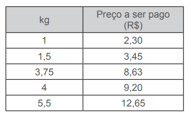

Respostas das atividades
Unidade 1
Capítulo 1
Encontre soluções
Página 16
1. a) Resposta pessoal.
b) Medidas de superfície: 125,12 km². Números naturais que indicam
quantidade: 1192, 344, 848, 12.
c) Um mil e cento e noventa e
dois, trezentos e trinta e quatro, oitocentos e quarenta e oito,
doze.
2. a) 57, 58 e 59.
b) 99 e 100
c) 997, 998, 999 e 1 000.
3. a) 40, 45
b) 78, 92
c) 88, 99
d) 512, 1 024
4. a) 2 014
b) 10 000
c) 102 001
d) 98 987
5. a) 0, 2, 4, 6, 8, 10, 12, 14, ...
b) 1, 3, 5, 7, 9, 11, 13,
15, ...
c) 0, 7, 14, 21, 28, 35, 42, 49, ...
d) 1, 2, 4,
5, 10, 20, 25, 50, 100, ...
e) 0, 11, 22, 33, 44, 55, 66, 77,
...
f) 1, 11, 121, ...
6. A: 2; B: 4; C: 8; D: 14
7. a) ∈
b) ∉
c) ∈
d) ∉
8. a) Falsa. O conjunto dos múltiplos de um número natural é
infinito. Todo número natural possui infinitos múltiplos.
b) Falsa. O número 1 é divisor de todos os números.
c) Verdadeira.
d) Falsa. O conjunto dos divisores de um número natural é finito.
9. a) D(32) = {1, 2, 4, 8, 16, 32}
b) D(64) = {1, 2, 4, 8, 16,
32, 64}
c) D(90) = {1, 2, 3, 5,6, 9, 10, 15, 18, 30, 45, 90}
d) D(121) = {1, 11, 121}
10. 40
11. Resposta pessoal.
12. a) M(11) = {0, 11, 22, 33, 44,55, ...}
b) M(15) = {0, 15, 30, 45, 60,75, ...}
c) M(20) = {0, 20, 40,
60, 80, 100, ...}
d) M(32) = {0, 32, 64, 96, 128, 160, ...}
13. Esta pessoa precisará comprar 5 pacotes de bombons e 4 pacotes de bala.
14. Resposta pessoal.
15. c)
16. d)
17. d)
Encontre soluções
Página 20
1. a) − 6ºC, − 5ºC e − 2ºC. Representam as temperaturas de um dia de
inverno nos estados do Rio Grande do Sul, Santa Catarina e Paraná.
b) − 2ºC
c) Abaixo de zero.
d) − 2ºC
e) Resposta pessoal.
2. a) − 250 m
b) + R$ 378,00
c) − 9ºC
d) + 850 m
e) + R$ 692,00
f) − R$ 1.200,00
g) − 130 m
h) − R$ 50,00
3. a) + 8 861 m; − 392 m.
Página 21
4. a) + 12
b) + 10
c) − 1
d) − 2
e) 0
f) − 3
5. − 6; + 14; + 2; + \(\dfrac{9}{9}\) ; −26; − \(\dfrac{8}{4}\)
6. a) − 14, − 13 e − 12
b) − 51 e − 50
c) + 216, + 217 e + 218
7. − 1, 0, 1, 6, 7
8. A: − 8; B: − 3; C: + 4; D: + 8.
9. d)
10. d)
Encontre soluções
Página 25
1. a) ∉
b) ∈
c) ∈
d) ∉
e) ∈
f) ∉
g) ∈
h) ∈
i) ∈
j) ∈
2.

3. A: \(- \dfrac{4}{3}\); B: \(- \dfrac{1}{2}\); C: \(\dfrac{2}{3}\); D: \(\dfrac{7}{4}\)
4. a) F
b) V
c) V
d) V
e) F
5. a) 0,25
b) − 0,4
c) − 0,75
d) 0,8
e) 7,5
f) − 3,4
g) 5,5
h) − 3,5
6. a) \(- \dfrac{5}{4}\)
b) \(\dfrac{37}{10}\)
c) \(\dfrac{9}{20}\)
d) \(- \dfrac{3}{100}\)
e) \(-
\dfrac{17}{14}\)
f) \(\dfrac{501}{500}\)
g)
\(\dfrac{23}{10}\)
h) \(- \dfrac{3}{2}\)
7. a) \( \dfrac{28}{42}\)
Página 26
8. \(\dfrac{26}{39}\)
9. a) \(-\dfrac{1}{4}\)
b) \(\dfrac{7}{5}\)
c) \(\dfrac{1}{4}\)
d) \(-\dfrac{9}{17}\)
e) \(-\dfrac{2}{11}\)
f) \(\dfrac{2}{5}\)
10. a) 0,3333... Decimal infinito e periódico.
286
b) 0,777... Decimal infinito e periódico.
c) 7,4 Decimal
finito.
d) 0,1666... Decimal infinito e periódico.
e)
2,8 Decimal finito.
f) 0,8333... Decimal infinito e periódico.
11. e)
12. d)
Capítulo 2
Encontre soluções
Página 29
1. a) Falsa. - 5 < - 3, pois -5 está à esquerda de - 3 na reta
numérica.
b) Verdadeira, pois \(-\dfrac{2}{3}\) está à direita de
\(-\dfrac{5}{3}\) na reta numérica.
c) Verdadeira, pois +10
está à direita de +7 na reta numérica.
d) Falsa. 9,04 > 8,5,
pois 9,04 está a direita de 8,5 na reta numérica.
e) Falsa. 0
> - 1, pois 0 está à direita de - 1 na reta numérica.
f)
Verdadeira, pois + 2 está à direita de - 2 na reta numérica.
2. a) Veteranos. b) Aliança. c) Veteranos. d) Vitória. e) Juventude. f)

4. - 3, - 2, - 1, 0, 1, 2, 3, 4.
5. A temperatura mais baixa foi registrada na cidade B.
6. O tubo que tem o maior diâmetro é o de \(\dfrac{3}{4}\)de polegada.
Página 30
7. a) André e Mateus.
b) Juliano, Lucas e Guilherme.
c)
André.
d) Guilherme.
e) -R$ 45,00, -R$ 36,78, -R$ 27,22,
R$ 17,08, R$ 85,00
8. Resposta pessoal.
Capítulo 3
Encontre soluções
Página 32
1. a) 13
b) \(\dfrac{8}{7}\)
c) 4
d) \(\dfrac{6}{11}\)
e) 8
f) 8
g) 145
h) 1
243
i) 24
j) \(\dfrac{3}{5}\)
k) 32
l) 9,75
2.
3. - 55
4. a) x = - 15 ou x = 15
b) x = - 8,7 ou x = 8,7
c) x =
- 27 ou x = 27
d) x = \(-\dfrac{1}{4}\) ou \(\dfrac{1}{4}\)
5. a) - 104, - 21, - 7, - 1, + 12, + 16, + 44, + 120
b) + 120,
+ 44, + 16, + 12, - 1, - 7, - 21,- 104
c) 1, 7, 12, 16, 21,
44, 104, 120
6. a) A = 2 e seu oposto é - 2.
b) B = - 7 e seu oposto é + 7.
c) C = - 0,5 e seu oposto é + 0,5.
d) D = 1,25 e seu
oposto é - 1,25.
e) E = 9 e seu oposto é - 9.
f) F = - 6
e seu oposto é 6.
7. a) F. Os números - 0,3 e 0,3 são números opostos.
b) V.
c) V.
d) F. O módulo de 1 é igual a 0,5. 2
e) V.
f) F. Os números 1,02 e - 1,02 são números simétricos.
g) V.
Relembre
Página 37
1. d)
2. c)
3. O salário de Rafael passou a ser de R$ 984,00.
4. b)
5. d)
Página 38
6. c)
7. c)
8. e)
9. c)
10. b)
Página 39
11. b)
Unidade 2
Capítulo 1
Encontre soluções
Página 46
1. (- 4,5) + (- 2) = - 4,5 - 2 = - 6,5. O mergulhador atingiu 6,5 me- tros de profundidade em relação ao nível do mar.
2. - 2
3. a) - 12
b) - 4
c) - 5
d) + 6
e) - 39
f) 0
g) - 18
h) - 2
i) - 62
j) + 54
k) + 168
l) + 121
4. a) A empresa teve maior lucro no 1.º semestre de 2013 e maior
prejuízo no 2.º semestre de 2013.
b) Teve um lucro de 2
milhões de reais.
c) O prejuízo foi menor no 1.º semestre de
2014.
d) Um saldo positivo de 3 milhões de reais.
Página 47
5.

6. a) - 2
b) - 31
c) - 9
d) -34
e) + 6
287
7. a) -11,81
b) \(\dfrac{11}{21}\)
c) 3,59
d) 0
e) \(\dfrac{19}{20}\)
f) \(- \dfrac{21}{2}\)
g) \(\dfrac{5}{7}\)
h) \(-\dfrac{5}{6}\)
i) \(\dfrac{11}{20}\)
8. a) \(\dfrac{3}{5}\)
b) -50,17
c)
\(\dfrac{5}{12}\)
d) -3
Encontre soluções
Página 50
1. a) + 2
b) - 3
c) 0
d) + 29
e) - 22
f) - 382
g) - 37
h) + 136
i) - 104
j)
+ 98
k) - 630
l) 0
2. a) 3
b) 149
c) - 60
d) 9
e) - 48
f)
95
g) 71
3. A variação de temperatura foi de 7°C.
Página 51
4.

Página 52
5. O valor disponível do cheque especial em sua conta bancária era de R$ 293,50.
6. a) - 4,83 b) \(-\dfrac{5}{8}\) c) -9,56 d) \(-\dfrac{11}{15}\) e) \(\dfrac{17}{21}\) f) \(\dfrac{9}{5}\)
7.

Página 53
8. Resposta pessoal.
9. 2,95
10. a) 10
b) - 23
c) 24
d) - 1
e) - 25,17
f)\(\dfrac{3}{2}\)
g) - 2,65
Página 54
11. Resposta pessoal.
12. Não. O máximo divisor comum entre 13 e 169 é 13 e a fração pode ser simplificada. Sua forma irredutível é \(\dfrac{1}{13}\)
13. Resposta pessoal.
Capítulo 2
Encontre soluções
Página 59
1. a) - 40
b) - 90
c) + 36
d) - 200
e) + 77
f) + 60
g) - 42
h) + 28
2. a) + 112
b) - 650
c) + 44
d) - 54
3. (- 1) ∙ (+ 18); (+ 1) ∙ (- 18);
(+ 2) ∙ (- 9); (- 2) ∙ (+
9);
(- 3) ∙ (+ 6) ∙ (+ 3) ∙ (- 6).
4. a) - 30
b) + 60
c) - 55
d) + 36
5. a) 30
b) - 22
c) 72
d) - 20
6. a) 27
b) - 45
c) - 208
d) - 3
7. a) \(\dfrac{6}{11}\)
b) - 28
c) - 0,125
d) -
0,36
e) 24,14
f) 0,96
g) \(-\dfrac{5}{9}\)
h) \(\dfrac{4}{3}\)
8. a) \(-\dfrac{13}{9}\) b) - 6,25 c) \(-\dfrac{106}{15}\) d) \(\dfrac{29}{42}\) e) \(\dfrac{7}{50}\)
9. Resposta pessoal.
Página 60
10. a)
Encontre soluções
Página 63
1. a) + 2
b) - 11
c) + 8
d) + 9
e) - 22
f) - 7
g) + 4
h) - 8
2. a) - 0,5
b) \(- \dfrac{1}{3}\)
c) -6
3. a) Positivo.
b) Positivo.
c) Negativo.
d)
Negativo.
4. a) 32
b) - 9
c) - 40
d) 12
e) - 0,5
f) 0,49
5. a) 2
b) 28
c) - 9
d) - 8,8
e) - 1,3
f) - 12,1
Página 64
6. a) \(-\dfrac{9}{4}\)
b) \(\dfrac{16}{15}\)
c) \(-\dfrac{2}{7}\)
d) -36
e) \(-\dfrac{8}{3}\)
f) - 0,5
g) -18,4
h) \(-\dfrac{3}{4}\)
i) \(\dfrac{14}{5}\)
j) \(\dfrac{55}{27}\)
288
7. a) \(-\dfrac{4}{5}\)
b) \(\dfrac{1}{24}\)
c) \(-\dfrac{1}{14}\)
d) -28,44
e) 12,5
f) - 31,6
8. a) - 5,7
b) 4,3
c) - 6
d)
\(-\dfrac{4}{3}\)
e) \(\dfrac{38}{7}\)
f)
\(\dfrac{1}{2}\)
g) 1,94
h) - 3,95
f)
\(\dfrac{83}{30}\)
9.

10. Resposta pessoal.
Capítulo 3
Encontre soluções
Página 70
1. a) 25
b) -27
c) 10 000
d) - 27
e) 64
f) 1
g) 1
h) - 1
i) - 100 000
j) 49
k) 1
l) -81
2. a) 3³ = 27
b) 6³ = 216
c) 5³ = 125
d) 2³ = 8
3. a) \((- 5)^{2}\) = 25
b) \((-4)^{3}\) = - 64
c) \((-
2)^{8}\) = 256
d) \(10^{5}\) = 10 000
4. a) \(-\dfrac{1}{128}\)
b) - 0,00001
c)
\(\dfrac{25}{49}\)
d) \(-\dfrac{9}{10}\)
e)
1
f) 1,44
g) \(\dfrac{27}{64}\)
h) -
0,125
5. a) \((- 2)^{8}\)
b) \(\left( -
\dfrac{2}{3}\right)^{3}\)
c) \((-0,5)^{12}\)
d) \(\dfrac{3}{5}\)
e) \(7^{4}\)
f) \(\left( - \dfrac{1}{7}\right)^{8}\)
Página 71
6. a) 3
b) 10
c) 8
d) 4
e) 2
f) 4
7. a) \(-\dfrac{3}{8}\)
b) -143
c) \(-\dfrac{88}{75}\)
d) \(\dfrac{61}{36}\)
8. a)
9. e)
Encontre soluções
Página 74
1. Medida do lado: 14 cm; Perímetro: 56 cm.
2. a) 9
b) 11
c) 7
d) 1
e) 20
f) 0
3. 640 m.
4. a) 0,2
b) 1,2
c) 0,4
d) 0,7
e) 0,8
f) 1,3
g) \(\dfrac{5}{10}\)
h)
\(\dfrac{2}{9}\)
i) \(\dfrac{1}{3}\)
j)
\(\dfrac{11}{4}\)
5. a) \(\dfrac{17}{30}\)
b) \(-\dfrac{5}{12}\)
c) 1,3
d) 1
e) \(\dfrac{51}{10}\)
f) \(-\dfrac{127}{15}\)
6. d)
Relembre
Página 78
1. a)
2. 20 horas.
3. c)
4. Avós: \(2^{2}\); bisavós: \(2^{3}\); trisavós: \(2^{4}\); tataravós: \(2^{5}\) = 32.
5. d)
6. \(2^{15}\)
Página 79
7. 6 m.
8. c)
9. b)
10. c)
11. a)
12. c)
13. a)
Unidade 3
Capítulo 1
Encontre soluções
Página 83
1. Resposta pessoal. Régua,trena, metro de carpinteiro, fita métrica, etc.
2. a) Régua.
b) Trena ou metro de carpinteiro.
c) Trena
ou metro de carpinteiro.
d) Régua.
3. Resposta pessoal.
4. Resposta pessoal.
Capítulo 2
Encontre soluções
Página 92
1. 10 250 m²
2. A área do retângulo é de 735 cm².
3. 2,16 m²
4. 27 m²
5. 4 m²
6. a) 25 cm²
b) 54 cm²
Página 93
c) 60 cm²
d) 14 cm²
e) 48 cm²
f) 150 cm²
7. 900 lajotas.
8. 9,6 m²
9. 30 cm²
10. 126 m
11. 1 220 cm²
Capítulo 3
Encontre soluções
Página 95
1. a) Área: 48 cm². Perímetro: 32 cm.
b) Área: 84 cm². Perímetro: 36 cm.
2. a) 36 cm²
b) 92 cm²
3. a) 1 200 cm²
b) 140 cm
c) 1 496 cm²
d) 156 cm
4. 144 cm²
5. Resposta pessoal.
Página 96
6. 80 m²
7. 1,44 m²
8. d)
9. d)
289
Capítulo 3
Encontre soluções
Página 98
1. a) 9 cm³
b) 36 cm³
c) 54 cm³
Página 99
2. a) 1215 cm³
b) 2916 cm³
3. Resposta pessoal.
4. 36 blocos.
5. c)
Relembre
Página 105
1. d)
2. c)
3. 192 peças.
4. c)
5. 1 800 pessoas.
Unidade 4
Capítulo 1
Encontre soluções
Página 112
1. Resposta pessoal.
Página 113
2. a) Circunferência.
b) Circunferência.
c) Círculo.
d) Círculo.
3. a) Circunferência.
b) Representam os cinco continentes; África, América, Oceania, Ásia
e Europa.
4. 8 cm
5. a) Corda.
b) Corda e diâmetro.
c) Raio.
d) Raio.
e) Raio.
6. Sim, pois os segmentos AO, BO, CO e DO representam a medida do raio da circunferência.
7. 12,4 cm, pois a medida do diâmetro é igual a duas vezes a medida do raio.
8. Resposta pessoal.
9. a)
Capítulo 2
Encontre soluções
Página 116
1. 800 m
2. 8,478 cm
3. 23,55 cm
4. 13,71 m
Capítulo 3
Encontre soluções
Página 118
1. Alguns exemplos: A, B, C, E, H, I, M, O, T, U, V, Y.
b) Alguns exemplos: F, G, J, L, N, P, Q, R, S, Z.
2.
a)
b)
c)
d)
Página 119
3. Uma flor.
4. Resposta pessoal.
5. 8 eixos de simetria.
Capítulo 4
Encontre soluções
Página 121
1. a) Simetria por translação.
b) Simetria por rotação.
c) Simetria por reflexão.
2. a) Simetria de rotação.
b) Simetria de reflexão.
3. Resposta pessoal. Ela apresenta simetria de reflexão.
4. e)
5. d)
6. b)
Capítulo 5
Encontre soluções
Página 125
1. A(3, 2); B(4, 4); C(-1, -3); D(0, -1); E(4, 0); F(-2, -2); G(0, 3).
2.
3. a) A(3, 2); B(7, 7); C(9, 2).
b) Triângulo escaleno.
c) 15 u.a
4. a) Quadrilátero.
b) 4 u.a.
c) 16 u.a.
d) 16 u.a
5. c)
Encontre soluções
Página 129
1.
2.
Relembre
Página 134
1. 6 cm
2. 23 voltas aproximadamente.
3. a)
b)
290
4. b)
5. b)
6. O polígono A’B’C’D’ é simétrico ao polígono ABCD em relação ao eixo y. O polígono A’’B’’C’’D’’ é simétrico ao polígono ABCD em relação a origem do plano cartesiano.
Unidade 5
Capítulo 1
Encontre soluções
Página 142
1. a) 4x
b) x - 15
c) 2x + 8
d) x - 1
e) x +
1
f) 3(x + 1)
g) 2x - 1
h) \(\dfrac{3}{5}\)x
i) 3x - 45
j) 4x + \(\dfrac{1}{2}\)x
2. a) y + 5
b) x - 200
c) 36 - x
3. \(\dfrac{2}{5}\)x
4. 3y + 12
5. \(\dfrac{x}{2}\) + 7
6. 5y + 15
7. x + x + 8 ou 2x + 8.
8. 45 - b
9. a) 14x
b) -18y
c) 5a
d) 17x + 10
e) 18y -
32x
f) 2a + 7
g) -2x + 16
h) 10x + 2
Página 143
10. 10,5 cm²
11. a) 3x + 2y b) Marcelo gastará menos na papelaria B, ou seja, R$ 13,00
12. a) 9
b) 18
c) 1
d) -12
e)
\(\dfrac{7}{12}\)
f) \(\dfrac{7}{9}\)
13. a) 4x + 10
b) 4x + 6
c) 24 cm
d) 12,4 cm²
14. 37
Página 144
15. a) 4a + 16
b) 9b - 10
c) 7m + 10
d) 2r + 2p +
6
16. a) 16
b) 5
c) Negativo.
17.
Capítulo 2
Encontre soluções
Página 148
1. a)
b) 3n, sendo n o número correspondente ao estágio.
2. a)
b) 2n, sendo n correspondente ao tempo.
3. a) 4n
b) 3n
c) 2n + 1
4. Sim. São expressões algébricas equivalentes.
Capítulo 3
Encontre soluções
Página 151
1.
2. a) Simétrica.
b) Simétrica.
c) Transitiva.
d)
Simétrica.
e) Transitiva.
Página 152
3. Divida os nove cubos em três grupos. Coloque três cubos em cada prato. Se a balança permanecer em equilíbrio, o cubo de menor massa estará no grupo que não foi pesado. Então, escolha dois cubos do grupo que não foi pesado. Se a balança permanecer em equilíbrio, o cubo de menor massa será o que não está na balança. Caso a balança não fique em equilíbrio, o cubo de menor massa será o que está no prato mais alto.
4. Podemos resolver a atividade da seguinte forma: Num prato, serão colocadas as caixas com 20 e 60 esferas; no outro, as caixas com 30 e 50 esferas. Se a balança permanecer em equilíbrio, a esfera terá sido retirada da caixa em que havia 40 esferas. Se houver desequilíbrio, serão pegas as caixas do prato mais alto. Supondo que as caixas de 30 e 50 esferas estavam no prato mais alto, então a esfera foi retirada de uma dessas caixas. Para a 2.ª pesagem, a caixa de 50 esferas será colocada num prato e a de 30 esferas, no outro prato, com a de 20 esferas. Se o prato que contém a caixa de 50 esferas ficar mais alto, a esfera terá sido retirada dela. Se o prato que contém as caixas de 20 e 30 esferas ficar mais alto, a esfera terá sido retirada da caixa de 30 esferas.
5. 4 bolas verdes.
6. a) Ele deve escolher duas moedas quaisquer e colocar cada uma
delas em um dos pratos da balança. Se a balança ficar equilibrada, a
moeda não escolhida é a leve. Se a balança não ficar equilibrada,
então o prato mais alto indicará a moeda mais leve.
b) Ele
deverá dividir as 9 moedas em três grupos de três e pesar dois
quaisquer desses grupos. Se a balança ficar equilibrada, ele saberá
que a moeda mais leve está no grupo não escolhido. Se ela não ficar
equilibrada, a moeda mais leve estará no prato mais alto. Em
qualquer caso, ele pode restringir a busca para um grupo de três
moedas. Utilizando o raciocínio do item anterior, com somente mais
uma pesagem ele descobrirá a moeda mais leve.
c) Há várias
maneiras de se resolver esta situação. Uma maneira seria ele dividir
as moedas em três grupos contendo as quantidades: 5, 5 e 1. Após
realizar uma pesagem entre os primeiros dois grupos, caso a balança
fique equilibrada, ele saberá que a moeda mais leve é a do último
grupo. Caso contrário, ele deve agora dividir o grupo de 5 moedas do
prato mais alto em três, com as seguintes quantidades: 2, 2 e 1.
Efetuando-se uma pesagem com os dois primeiros grupos, caso o prato
fique equilibrado, ele saberá que a mais leve é a moeda do último
grupo. Caso contrário, basta ele efetuar a última pesagem entre as
moedas do prato mais alto.
291
Encontre soluções
Página 156
1. a), b) e d).
2. a) e c).
3. É raiz, pois 4 = 4.
4. m = 10
5. x = 3
6. b) e c)
7. Cubo: 1 kg; esfera: 2 kg; paralelepípedo: 3 kg.
8. Não é raiz, pois 3 ≠ -3.
Encontre soluções
Página 159
1. a) 16x + 4
b) 10
2. a) 98,6ºF
b) 5ºC
3. a) S = {7}
b) S = {-2}
c) S = {10}
d) S = {9}
e) S = \(\text{\textbraceleft} \dfrac{1}{2}
\text{\textbraceright}\)
f) S = \(\text{\textbraceleft}
- \dfrac{7}{2} \text{\textbraceright}\)
4. 11 cm, 12 cm e 13 cm.
Página 160
5. 8 km, 23 km e 28 km.
6. a) S = \(\text{\textbraceleft} - \dfrac{7}{2}
\text{\textbraceright}\)
b) S = {-20}
c) S = {5}
d) S = {-8}
e) S = {3}
f) S =
\(\text{\textbraceleft} \dfrac{59}{2} \text{\textbraceright}\)
g) S = \(\text{\textbraceleft} \dfrac{4}{9}
\text{\textbraceright}\)
7. x = 5
8. a) S = \(\text{\textbraceleft} -\dfrac{80}{7}
\text{\textbraceright}\)
b) S = \(\text{\textbraceleft}
- \dfrac{1}{2} \text{\textbraceright}\)
c) S = {-18}
d) S = \(\text{\textbraceleft} \dfrac{11}{5}
\text{\textbraceright}\)
e) S = {-1}
f) S =
\(\text{\textbraceleft} \dfrac{12}{7} \text{\textbraceright}\)
g) S = \(\text{\textbraceleft} \dfrac{8}{17}
\text{\textbraceright}\)
9. a) a = 5
b) b = 3
10. 192 cm²
11. Menina: 14; menino: 6.
Página 161
12. a) S = \(\text{\textbraceleft} -\dfrac{5}{7}
\text{\textbraceright}\)
b) S = \(\text{\textbraceleft}
\dfrac{25}{11} \text{\textbraceright}\)
c) S = {1}
d) S = \(\text{\textbraceleft} -\dfrac{3}{2}
\text{\textbraceright}\)
e) S = {-2}
f) S = {4}
13. b)
14. a)
15. b)
16. Resposta pessoal.
Encontre soluções
Página 163
1. 5x = 800
2. a) \(2x + \dfrac{1}{5}x = 175\)
b) \(\dfrac{1}{4}x -
3x = 195 + x\)
c) 8y-35=3y
Página 164
3. m = 25 g
4. Há na prateleira 9 caixas de suco de maracujá e 36 de suco de laranja
5. 4(x - 3) + 2 = 90
6. Os números são 41 e 85
7. Meninas: 24; meninos: 18; 7.º ano A: 42 alunos.
8. A capacidade total do balde é 10 litros.
9. Foram entrevistadas 870 pessoas.
10. Fizeram a travessia 27 veículos.
11. O agricultor colheu 3 200 sacas
Página 165
12. Lucas: R$ 135,00; Gabriel: R$113,00; João: R$ 120,00
13. Marcos: R$ 48.000,00; William: R$ 16.000,00; Cássio: R$8.000,00.
14. Márcia tem 45 anos.
15. Diofante viveu 84 anos.
16. c)
Capítulo 4
Encontre soluções
Página 170
1. x ≤ 8 ou x < 9
2. r ≤ 5,25
3. Há 251 litros de água no reservatório.
4.
Página 171
5. a) S = {x ∈ \(\mathbb{Q}\) | x > 5}
b) S = {x ∈ \(\mathbb{Q}\) | x ≤ -4}
c) S = {x ∈ \(\mathbb{Q}\) | x < 9}
d) S = {x ∈ \(\mathbb{Q}\) | x ≥ - \(\dfrac{9}{4}\)}
e) S = {x ∈ \(\mathbb{Q}\) | x > -10}
f) S = {x ∈ \(\mathbb{Q}\) | x < \(\dfrac{27}{2}\)}
g) S = {x ∈ \(\mathbb{Q}\) | x > - \(\dfrac{58}{5}\)}
6. c)
Página 172
7. a) Vânia deverá escolher a pri- meira opção, que é a mais
vantajosa, já que, escolhendo a segunda, ela gastaria R$ 157,50.
Para escolher a segunda opção, ela teria de percorrer uma distância
menor que 40 km. Temos que 90 + 1,5x = 150, em que x representa a
quantidade de km rodados. Sendo x = 40, isso significa que, com 40
km rodados, ela gastaria a mesma quantia, não importando a opção que
escolhesse.
b) Como a cliente escolheu a opção I, temos que 40
+ 4x = 104, sendo x a quantidade de filmes locados. Nesse caso, ela
alugou 16 filmes no ano. Se ela tivesse escolhido a opção II para a
mesma quantidade de filmes, teria gastado R$ 118,40. Portanto, ela
escolheu a melhor opção. Se fizermos 40 + 4x = = 80 + 2,4x, podemos
verificar que x = 25, ou seja, para x < 25, a opção I é a melhor e
para x > 25, a opção II é a indicada.
c) Fazendo 16 + 0,60x =
24 + 0,40x, podemos verificar que x = 40. Sendo x o total de minutos
falados ao telefone, se o cliente falar 40 minutos, ele terá o mesmo
custo em qualquer uma das empresas. Já se x < 40, então a melhor
opção será escolher as condições oferecidas pela empresa A. Se x >
40, então a melhor opção será a empresa B.
292
Relembre
Página 177
1. a) 2
b) 0
2. a)
3. 2x + 3 = 3x
4. b)
5. e)
6. c)
Página 178
7. Juliane ganhou 25 ingressos.
8. Os números são 48 e 24.
9. Natália tem 21 anos e Beatriz, 6 anos
10. 4 laranjas, 6 limões e 12 maçãs.
11. a)
12. a)
13. b)
14. d)
Página 179
15. Pedaço maior: 96 cm; pedaço menor: 24 cm.
16. a) S = \(\text{\textbraceleft} - \dfrac{4}{3}
\text{\textbraceright} \)
b) S = \(\text{\textbraceleft} - \dfrac{35}{3}
\text{\textbraceright} \)
c) S = \(\text{\textbraceleft} - \dfrac{51}{9}
\text{\textbraceright}\)
d) d) S = {-1}
d) e) S = {5}
f) S = \(\text{\textbraceleft} - \dfrac{33}{5}
\text{\textbraceright}\)
17. b)
18. a)
19. e)
20. e)
21. a)
Unidade 6
Capítulo 1
Encontre soluções
Página 184
1. a) med (AÔB) = 180º
b) med (EÔF) = 30º
c) med (MÔN) =
132º
d) med (PÔR) = 62º
Página 185
2. a)
b)
c)
3. 30º
4. a) 270º
b) 210º
c) 330º
d) 240º
5. a) Ângulo reto.
b) Ângulo obtuso.
c) Ângulo raso.
d) Ângulo agudo.
e) Ângulo agudo.
f) Ângulo reto.
Encontre soluções
Página 187
1. a) 60’
b) 60”
c) 3 600”
2. a) 1º 36’
b) 4º 8’
c) 7º 32’
3. a) 7 800’’
b) 1 290”
c) 57 600”
4. a) 45º = 2 700’ = 162 000”
b) 138º = 8 280’ = 496 800”
c) 110º = 6 600’ = 396 000”
d) 62º = 3 720’ = 223 200”
Capítulo 2
Encontre soluções
Página 190
1. 720º
2. a) 128º
b) 59º 40’
c) 33º 56’
d) 57º
e)
58º
f) 20º 25’ 57”
3. a) 18º
b) 50º 33’
c) 27º 54’
d) 14º 43’ 50”
e) 11º 48’ 56”
f) 13º 18’ 5”
Encontre soluções
Página 191
1. a) 36º 20’
b) 55º 6’ 30”
c) 157º 22’ 30”
d)
108° 38’
e) 121° 40’ 56”
f) 291° 14’ 20”
2. a) 58º 30’ 24”
b) 43º 33’ 21”
c) 20º 44’ 24”
3. a) 80° 17’ 37”
b) 174° 6’ 23”
c) 170° 5’ 37”
d)
117° 36’
4. 720°
Encontre soluções
Página 192
1. a) 12º 34’
b) 17º 10’
c) 5º 35’
2. a) 41º 46’ 23”
b) 27º 8’ 24”
c) 30º 30’
3. a) 24º
b) 80º 24’
c) 35º
4. 3
5. a) Falsa; (157º 32’ 54”) : 3 = = 52º 30’ 58”
b) Verdadeira.
c) Falsa; 191º 40” - 98º 40’ = = 92º 20’ 40”
6.
Capítulo 3
Encontre soluções
Página 200
1. a)
b)
c)
d)
293
2. x = 11º
3. a) x = 33º
b) y = 60º
c) y = 65º; x = 32º 30’
4. a) med (AÔC) = 70º
b) med (AÔC) = 88º
Página 201
5. a) x = 10º
b) med (AÔB) = 75º;
med (BÔC) = 75º;
med (DÔE) = 15º;
med (CÔD) = 15º;
med (AÔC) =
150º;
med (CÔE) = 30º;
med (AÔD) = 165º;
med (BÔE)
= 105º.
6. Resposta pessoal.
Encontre soluções
Página 205
1. a) Falsa. Como a soma das medidas dos ângulos é 90º, eles são
complementares.
b) Falsa. Como a soma das medidas dos ângulos é 80º, temos um ângulo
agudo.
c) Verdadeira. Como a soma das medidas dos ângulos é
180º, eles são suplementares.
d) Verdadeira. Como a soma das
medidas dos ângulos é 90º, eles são complementares.
2. a) 90º - x
b) 180º - x
c) 2(90º - x)
d) 3(180º
- x)
e) \(\dfrac{180º-x}{2}\)
f)
\(\dfrac{90º-x}{4}\)
Página 206
3. a) x = 30º
b) x = 30º
c) x = 25º
d) x = 15º
4. 45º
5. x = 18º
6. a) x = 40º
b) x = 20º
c) x = 132° 30’
d) x =
95º 30’
7. x = 40º
8. x = 45º
9. x = 70º
Página 207
10. c)
Encontre soluções
Página 208
1. a) x = 45º; y = 135º; z = 135º
b) x = 100º; y = 55º; z =
25º; w = 55º
2. Cada ângulo mede 78º.
3. a) x = 24º
b) x = 135º; y = 120º
Capítulo 4
Encontre soluções
Página 212
1. a) Colaterais externos.
b) Correspondentes.
c)
Alternos externos.
d) Alternos internos.
e)
Correspondentes.
f) Colaterais internos.
2. a) 50º
b) 45º
c) 120º
d) 85º
Página 213
3. 80°
4. a) x = 30º, y = 100º e z = 80º.
b) x = 15º, y = 60º e z =
60º.
c) x = 24º, y = 42º e z = 42º.
d) x = 65º, y = 115º
e z = 40º.
5. 45º e 135º.
6. 126° e 54°.
7. x = 50°
8. a = 120º, b = 74º30’ e c = 105º30.
9. 48º
10. a = 100º, b = 150º e c = 110º.
Relembre
Página 216
1. c)
2. O ângulo mede 49º 36’.
3. e)
4. b)
5. c)
6. Complemento: 37º 30’. Suplemento: 127º 30’.
7. c)
8. 85º
9. 153º 18’.
10. 8º
11. 44º
Página 217
12. 25º, 105º, 110º e 120º.
13. c)
14. b)
15. m = 32°
16. a) 63° 31’
b) 101° 4’ 7”
c) 48° 23’ 20”
d) 29°
16’
e) 17° 31’ 27”
17. a) 164° 49’ 52”
b) 55° 32’ 52”
c) 24° 21’ 52”
d) 52° 4’
e) 244° 44’ 36”
f) 228° 52’
g)
296º 46’ 36”
Página 218
18. c)
19. a) a = 135º
b) a = 35º; b = 15º
c) a = 53º
d)
b = 50º 30’
e) b = 41º
f) a = 110º; b = 10º
g) b =
17º
20. d)
Página 219
21. 140°
22. d)
23. 120°
24. a)
25. 36°
26. 9,75 cm; 13 cm; 16,25 cm
27. c)
Unidade 7
Capítulo 1
Encontre soluções
Página 224
1. a) \(\dfrac{9}{8}\)
b) \(\dfrac{8}{16} =
\dfrac{1}{2}\)
c) \(\dfrac{9}{16}\)
d)
\(\dfrac{9}{128}\)
e) \(\dfrac{8}{128}= \dfrac{1}{16}\)
f) \(\dfrac{16}{128}= \dfrac{1}{8}\)
g)
\(\dfrac{33}{128}\)
2. AC = 1 cm, CD = 2 cm e DB = 3 cm.
a) \(\dfrac{1}{2}\)
b) \(\dfrac{1}{3}\)
c) \(\dfrac{1}{6}\)
d) \(\dfrac{2}{6} = \dfrac{1}{3}\)
294
3. a) \(\dfrac{24}{8} = 3\)
b) \(\dfrac{8}{24} =
\dfrac{1}{3} \)
c) \(\dfrac{8}{32} = \dfrac{1}{4} \)
d) \(\dfrac{24}{32} = \dfrac{3}{4} \)
Página 225
4. a) \(\dfrac{0,5}{2} = \dfrac{1}{4} \)
Encontre soluções
Página 227
1. Vm \(\dfrac{d}{t} = \dfrac{238}{3,5} = 68 km/h\)
2. 20 km
3. 7 039,5 hab/km²
Página 228
4. 1 : 13 000 000. Representa que 1cm no mapa corresponde a aproximadamente 130 km.
5. a)
b) Ceará.
c) Amazonas.
6. Julia levará 3 h para percorrer 210 km.
Página 229
7.
8. a) Linha lateral: 8 cm; linha de fundo: 6 cm.
b)
\(\dfrac{8}{1000} = \dfrac{1}{1250}\)
c) 75 m.
9. Vm ≅ 722,67 km/h
10. c)
Página 230
11. d)
12. e)
Encontre soluções
Página 232
1. a) \(\dfrac{7,5}{5} = \dfrac{3}{2}\)
b)
\(\dfrac{3}{2}\)
Os retângulos são proporcionais, pois a razão
é a mesma.
2. a) 15
b) 5
c) 121
d) 75
e) 30
f) 13
3. a) x = 58,8
b) x = 17
c) x = \(\dfrac{118}{5}\)
d) x = \(\dfrac{7}{4}\)
e) x = 8,75
f)
x = 20
Capítulo 2
Encontre soluções
Página 235
1.
Página 236
2.
3. A nota de Mônica seria 8.
4. 54 barras estarão premiadas.
5. Serão necessários 25,53 litros aproximadamente, ou seja, 26 litros de tinta.
6. Sandra está economizando 24 litros de água em cada banho.
7. 24 homens foram aprovados.
8. O carro consumirá 45 L
9. Essa máquina produzirá 480 peças.
10. c)
Encontre soluções
Página 238
1. a) Diretamente proporcional.
b) Inversamente proporcional.
c) Inversamente proporcional.
d) Diretamente
proporcional.
2. Seriam necessárias 12 pessoas.
3. O carro levará 40 minutos.
4. Serão necessários 5 marceneiros.
5. d)
Capítulo 3
Encontre soluções
Página 241
1. a) \(\dfrac{37}{100}\)
b) \(\dfrac{85}{1000}\)
c) \(\dfrac{7}{1000}\)
d)
\(\dfrac{85}{100}\)
2. a) 0,46
b) 0,127
c) 0,005
d) 0,63
Página 242
3. a) 11%
b) 50%
c) 75%
d) 6,4%
4. a) 193,2
b) 0,96
c) 22,448
d) 338,8
5. a) R$ 55,00
b) R$ 80,00
c) R$ 200,00
d) R$
315,00
e) R$ 450,00
f) R$ 245,00
g) R$ 220,00
h) R$ 150,00
i) R$ 450,00
295
6. 9 alunos.
7. R$ 127,20
8. R$ 610,65
9. R$ 20.000,00
10. R$ 4.100.000,00
Página 243
11. Resposta pessoal.
12. Resposta pessoal.
13. c)
14. d)
Relembre
Página 249
1. a)
2. a) \(\dfrac{15}{31}\)
b) \(\dfrac{9}{60} =
\dfrac{3}{20}\)
c) \(\dfrac{45}{360} = \dfrac{1}{8}\)
d) \(\dfrac{2}{6} = \dfrac{1}{3}\)
3. d)
Página 250
4. a) x = 24
b) x = \(\dfrac{11}{5}\)
c) x = 7
b) x = \(\dfrac{41}{10}\)
a) \(\overline{AB}\) e a medida do lado \(\overline{DE}\): \(\dfrac{2}{3}\)
\(\overline{BC}\) e a medida do lado \(\overline{EF}\): \(\dfrac{2}{3}\)
\(\overline{AC}\) e a medida do lado \(\overline{DF}\): \(\dfrac{2}{3}\)
b) Sim, porque a razão entre as
medidas dos lados é sempre a
mesma.
6. O profissional trabalhou 96horas.
7. Seriam necessárias 6 torneiras.
8. c)
Página 251
9. e)
10. e)
Página 252
11. b)
12. a)
13. c)
14. d)
Página 253
15. a)
16. b)
Unidade 8
Capítulo 1
Encontre soluções
Página 263
1. a) É possível.
b) É possível.
c) Não é possível.
d) Não é possível.
2. 7 cm ou 4 cm.
3. 17 cm
4. 17 cm, 16 cm, 15 cm, 14 cm, 13 cm, 12 cm e 11 cm.
5. Sim, pois 12 < 12 + 12 (triângulo equilátero).
6. 12 cm.
7. a) Isósceles e obtusângulo.
b) Isósceles e acutângulo.
c) Escaleno e retângulo.
d) Isósceles e retângulo.
e) Equilátero e acutângulo.
8. a) Não representam as medidas
dos lados de um triângulo, pois
9 > 3 + 4.
b) Representam as medidas
dos lados de um triângulo, pois
4 < 10 +7, 10 < 4 + 7 e
7 < 4 + 10.
c) Não representam as medidas
dos lados de um triângulo, pois
12 > 8 + 3.
d) Representam as medidas
dos lados de um triângulo, pois
11 < 12 + 14, 12 < 11 + 14 e
14 < 11 + 12.
e) Não representam as medidas
dos lados de um triângulo, pois
7 > 5 + 1.
9. 8,7 cm
10. 3,7 cm
Encontre soluções
Página 265
1. 90º, 45º e 45º.
2. a) x = 60º
b) x = 35º
c) x = 65º
d) x = 44º
3. 59º, 60º e 61º.
4. a) x = 108º
b) x = 130º
c) x = 30º
d) x = 33º
5. 18º
Página 266
6. x = 30º, y = 110º e z = 70º.
7. x = 115º
8. a) Sim.
b) Eixo de simetria.
c) Sim. Em um triângulo isósceles os ângulos da base são
congruentes
9. 55º e 55º.
10. m = 38º
Capítulo 2
Encontre soluções
Página 273
1. 53 cm
2. 23,4 m
3. 145º
4. 36º, 72º, 108º e 144º.
5. \(\text{\^{A}}\) = 75º; \(\text{\^{B}}\) = 50º; \(\text{\^{C}}\) = 115º e \(\text{\^{D}}\) = 120º
6. a) Sim, é possível.
b) Sim, é possível.
7. d)
Relembre
Página 276
1. 35º
2. d)
3. d)
4. 90º, 25º e 65º
5. a)
Página 277
6. b)
7. 60º
8. a)
9. b)
10. d)
11. c)
12. a)
296